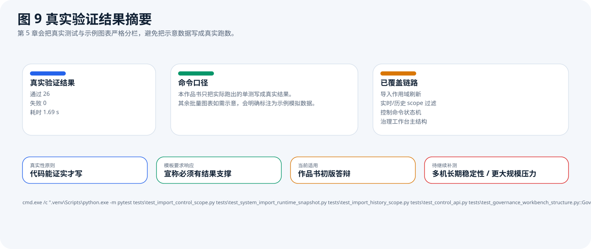
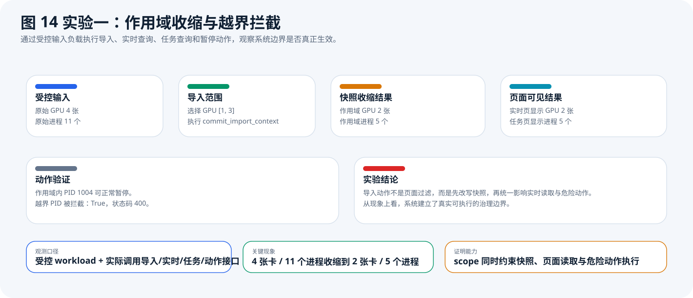
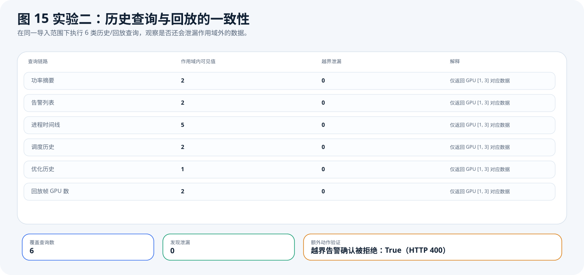
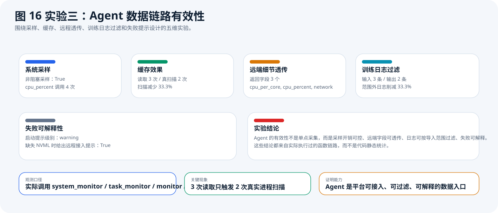
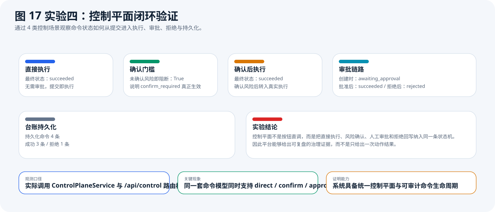
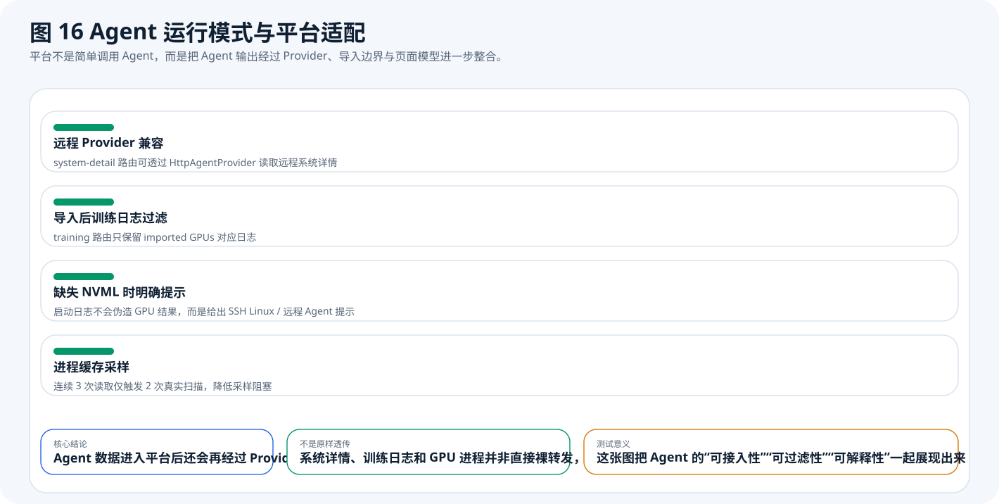
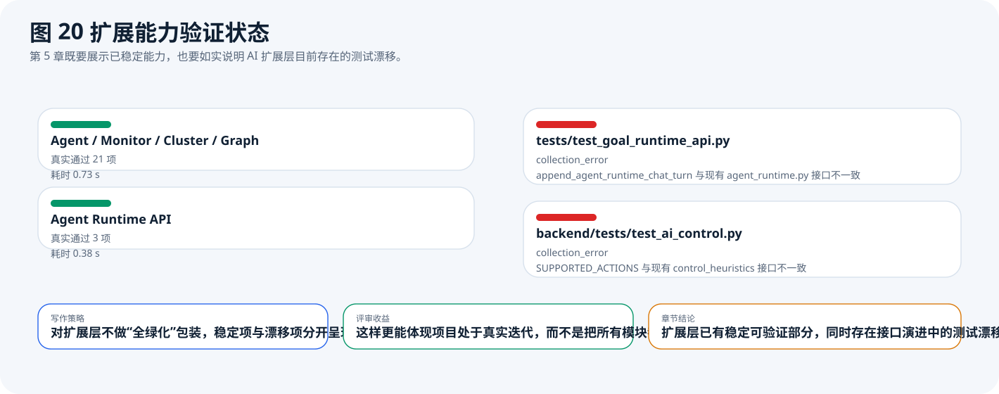

14
命名视图
前端并非单页拼贴，而是由导入层和多工作区组成的完整交互壳层。
这份网页作品书严格保留大赛模板的六章结构，但展示方式改为更适合答辩的证据型叙事。所有对系统核心能力的描述均来自当前代码库：前端存在独立导入层、治理/能耗/观察/告警/智能工作区，后端存在导入与运行时、治理与控制、能耗分析、监控回放、AI Runtime、图谱、集群作业等能力域，并由 server-agent、SQLite 与 Neo4j 共同支撑。
前端并非单页拼贴，而是由导入层和多工作区组成的完整交互壳层。
当前作品书已纳入实际运行结果，而不是只展示结构图和模拟图。
总览、治理、能耗、观察、告警、智能构成了当前系统的主导航结构。
AI Runtime、Graph、Cluster 在代码中均以独立路由与能力集存在。
本作品面向智算中心 GPU 共享与治理场景，构建了一套“导入式边界建立 + 统一治理控制 + 历史分析复盘 + 智能扩展”的平台。它不是单纯的监控看板，也不是孤立的 GraphRAG 演示，而是从接入、治理、分析到扩展执行的完整系统。系统当前主要服务于需要对 GPU 资源做精细化导入、风险可控治理、能耗复盘和智能辅助分析的管理员、运维人员、实验室使用者与算法工程团队。

这张图用真实可统计的工程指标给出系统体量：命名视图、后端端点、持久化表、控制能力和测试资产均来自代码扫描，而不是文案估计。

图中分层说明本作品的真实定位是“导入式 GPU 治理与智能分析平台”。评审看到这张图，就能理解为什么后续章节不是单纯围绕能耗或图谱展开。

用户从登录后不会直接进入监控页，而是先进入导入层，完成扫描、选卡和 import context 提交，再进入控制台壳层的多工作区。这个顺序来自 frontend/src/main.js 与导入控制逻辑。
在 GPU 共享场景中，真正困难的问题不是“能否采集指标”，而是“谁可以管理哪些卡、危险动作是否会误伤、策略是否能和复盘链路连通、智能能力能否接在统一控制平面上”。如果系统只有监控，没有边界与命令台账，就无法支撑真实治理；如果系统只有智能问答，没有接入、权限和历史回放，也无法支撑生产级场景。
| 方案类别 | 优势 | 局限 |
|---|---|---|
| 单点监控工具 | 实时数据直观 | 通常缺少导入边界、动作审批和复盘链路 |
| 单纯控制脚本 | 动作直接 | 缺少统一工作区、历史回放和策略联动 |
| 孤立 AI / 图谱 Demo | 智能展示强 | 常与实时接入、治理闭环、集群作业脱节 |

这张图把问题来源与代码中的真实模块做了一一对应。第 2 章不再泛泛谈“行业背景”，而是直接回答为什么当前代码库要有导入层、控制平面、复盘导出和扩展能力。
从代码结构看，本系统的技术路线可以概括为五步：一是通过本机 Agent、远程 Agent 或 SSH Linux 导入目标主机；二是建立 import context 并刷新 scoped 快照；三是在控制台工作区内对同一作用域进行治理、能耗、观察和告警分析；四是通过控制平面为动作、策略与集群对象提供统一能力目录；五是在统一平台上叠加 AI Runtime、Graph 和 Cluster 等扩展能力。

导入层、一级工作区、治理二级页和智能二级页共同构成用户可见的交互框架，证据来自 frontend/src/main.js、useConsoleShell.js、importWorkbench.js 与 governancePageModels.js。

这张图说明 server-agent 不是装饰性组件，而是平台接入、采集和控制动作的真实执行层。当前支持 GPU、系统、进程、训练日志采集，以及功耗与任务控制。

AI Runtime、Graph 和 Cluster 在代码中都拥有独立路由与能力面，不是附会在主平台上的零散组件。作品书将其写为“扩展层”，而不是主内核替代物。

能力前缀来自 backend/app/services/goal_runtime 中的 CapabilityDefinition，说明控制平面覆盖 runtime、scheduler、tasks、policy、job、queue、node、allocation 等对象。

这是整个技术方案的关键。commit_import_context 提交后，会触发 refresh_runtime_snapshot_scope，因此系统不是前端临时过滤，而是把治理边界持久写入当前工作区快照。
工程实现上，前端负责导入层、控制台壳层和各工作区页面；后端负责路由注册、作用域刷新、治理与分析服务、控制平面、AI Runtime、图谱与集群服务；server-agent 负责在目标主机上采集 GPU / 系统 / 进程状态并执行部分控制动作。数据方面，系统同时维护实时快照与持久历史，前者用于页面即时响应，后者用于能耗、回放、治理复盘与导出。

111 个端点的分布直接来自后端代码统计。该图回答了“项目是否真的是综合平台”这个问题。答案是肯定的，而且治理、分析、AI、图谱、集群都已形成独立域。

22 张持久化表来自 SQLite 支撑代码，覆盖运行时历史、治理复盘、平台身份、控制命令、AI Runtime 会话与集群状态。该图证明作品并非无状态演示。
http_local、http_remote 与 ssh_linux 三类 Provider。backend/app/main.py 中统一注册所有主能力路由，并通过 WebSocket 回传实时状态。本章不再把“代码里有这个模块”当作能力证明，而是把第 5 章改写为“真实跑数 + 受控实验”双证据结构。真实跑数又分成两层：一层是仓库级验证，回答系统主链路是否可运行；另一层是远端 3090 闭环实测，回答调度是否真的能在真实设备上发现高功耗风险、下发治理动作并让告警条件回落。其余受控实验继续回答导入边界、历史 scope、Agent 消费链和控制平面的可观测现象是否成立。
SshLinuxProvider、SchedulerEngine.run_budget_schedule 和 AlertEngine，在真实远端 3090 上人为制造高功耗负载，再人工触发一次预算治理，观察功耗上限、功耗曲线和告警条件是否同步变化。
这张图给出当前已经实际跑出的单测验证结果，并说明其覆盖链路。这样可以避免在作品书中把“结构存在”和“结果验证”混为一谈。

这张图里的 324.24W 代表 GPU3 的越阈峰值，261W 代表系统一次人工预算调度后实际写入的功耗上限，18/18 清洁率表示治理后整个观测窗口内没有新的越阈采样点。它直接回答“系统是否真的能治理功耗风险”。

蓝线是 GPU3 实测功耗，绿线是功耗上限，红虚线是 320W 告警阈值，橙线是人工触发治理动作的时间点。图中先出现越阈，再出现上限切换，随后功耗稳定贴近 261W，说明治理不是“纸面成功”，而是真正改变了设备运行状态。
基线窗口的 4 个点用于说明测试前 GPU3 处于空闲状态，平均功耗仅 20.98W；负载爬升窗口的 3 个点用于捕捉风险形成过程，其中第三个点达到 324.24W，触发真实功耗告警；治理后窗口的 18 个点用于验证动作是否稳定生效，结果显示功耗长期贴近 261W 且始终低于 320W 阈值。也就是说，这组数据同时证明了“发现风险”“执行动作”“效果持续”三个环节。
| 阶段 | 样本数 | 平均功耗 | 峰值功耗 | 平均温度 | 越阈样本 |
|---|---|---|---|---|---|
| 空闲基线 | 4 | 20.98 W | 28.91 W | 41.25 °C | 0 |
| 负载爬升 | 3 | 135.14 W | 324.24 W | 48.67 °C | 1 |
| 治理后观测 | 18 | 260.71 W | 265.42 W | 66.39 °C | 0 |
| 治理动作 | 1 次 | 预算 492 W | 限功率 350 W → 261 W | 功耗下降 63.53 W | 后窗清洁率 100% |
这张表是图 18 和图 19 的核心数值来源。裁判如果只看一张表，就能直接看到“基线空闲、爬升越阈、治理后稳定回落”的完整变化过程。
testdoc/data/real_remote_budget_experiment.json：实验摘要、告警记录、调度动作、治理结果。testdoc/data/real_remote_budget_samples.csv：25 个真实采样点的逐点数据。testdoc/data/real_remote_budget_summary.csv：给裁判快速看的阶段汇总表。testdoc/assets/book_remote_budget_experiment.svg：实验五摘要图，给裁判快速看结果。testdoc/assets/book_remote_budget_timeline.svg：实验五时间线图，给裁判看曲线变化与动作时刻。如果需要现场展示数值来源，优先给裁判看 CSV：每一行都对应时间线图上的一个点，没有把模拟数据混入真实实测。
| 时刻 | 阶段 | GPU3 功耗 | 功耗上限 | 温度 | 利用率 | 集群总功率 | 是否越阈 |
|---|---|---|---|---|---|---|---|
| 1.05 s | baseline | 18.36 W | 350.0 W | 41 °C | 0 % | 244.69 W | 否 |
| 3.32 s | baseline | 18.34 W | 350.0 W | 41 °C | 0 % | 226.33 W | 否 |
| 5.62 s | baseline | 28.91 W | 350.0 W | 42 °C | 0 % | 234.42 W | 否 |
| 8.12 s | baseline | 18.3 W | 350.0 W | 41 °C | 0 % | 240.19 W | 否 |
| 10.55 s | load_ramp | 18.32 W | 350.0 W | 41 °C | 0 % | 227.46 W | 否 |
| 12.86 s | load_ramp | 62.87 W | 350.0 W | 46 °C | 3 % | 268.29 W | 否 |
| 15.21 s | load_ramp | 324.24 W | 350.0 W | 59 °C | 100 % | 545.3 W | 是 |
| 16.2 s | post_action | 265.42 W | 261.0 W | 58 °C | 100 % | 479.66 W | 否 |
| 18.43 s | post_action | 260.72 W | 261.0 W | 58 °C | 100 % | 468.26 W | 否 |
| 20.65 s | post_action | 259.82 W | 261.0 W | 59 °C | 100 % | 467.69 W | 否 |
| 23.16 s | post_action | 261.03 W | 261.0 W | 61 °C | 100 % | 487.18 W | 否 |
| 25.62 s | post_action | 260.96 W | 261.0 W | 62 °C | 100 % | 468.71 W | 否 |
| 27.87 s | post_action | 259.82 W | 261.0 W | 63 °C | 100 % | 467.64 W | 否 |
| 30.14 s | post_action | 260.23 W | 261.0 W | 64 °C | 100 % | 476.0 W | 否 |
| 32.36 s | post_action | 259.74 W | 261.0 W | 65 °C | 100 % | 467.95 W | 否 |
| 34.74 s | post_action | 261.29 W | 261.0 W | 66 °C | 100 % | 469.31 W | 否 |
| 37.08 s | post_action | 261.27 W | 261.0 W | 67 °C | 100 % | 487.31 W | 否 |
| 39.37 s | post_action | 260.39 W | 261.0 W | 68 °C | 100 % | 468.51 W | 否 |
| 41.67 s | post_action | 259.9 W | 261.0 W | 69 °C | 100 % | 467.95 W | 否 |
| 44.01 s | post_action | 259.56 W | 261.0 W | 70 °C | 100 % | 485.08 W | 否 |
| 46.35 s | post_action | 260.95 W | 261.0 W | 71 °C | 100 % | 468.8 W | 否 |
| 48.59 s | post_action | 260.06 W | 261.0 W | 72 °C | 100 % | 467.38 W | 否 |
| 50.88 s | post_action | 260.95 W | 261.0 W | 73 °C | 100 % | 483.31 W | 否 |
| 53.15 s | post_action | 261.1 W | 261.0 W | 74 °C | 100 % | 469.29 W | 否 |
| 55.42 s | post_action | 259.5 W | 261.0 W | 75 °C | 100 % | 465.57 W | 否 |
这 25 行就是图 19 背后的原始数据。最关键的行是 15.21 s 的越阈点和之后整段 post_action 区间；裁判如果要判断治理是否生效，只要看这两段数据是否在动作前后发生了明显变化即可。

这张图对应受控 workload 实验的实际结果：原始 4 张卡、11 个进程在导入 GPU [1,3] 后收缩为 2 张卡、5 个进程；作用域内 PID 可执行暂停，越界 PID 会被 400 拦截。

这张图来自 6 类历史链路的实际查询结果。功率摘要、告警、进程时间线、调度历史、优化历史和回放帧都只返回 GPU [1,3] 范围内的数据，越界泄漏数为 0，越界告警确认同样被 400 拦截。

这张图不再只写接口数，而是直接展示实验观测：CPU 采样为非阻塞、3 次进程读取仅触发 2 次真实扫描、3 条训练日志经过导入过滤后只剩 2 条、缺失 NVML 时会给出远程接入提示。

这张图直接展示 direct、confirm_required、approval_required、reject 四类控制情形的实际表现。结果显示：未确认风险的命令被阻断，审批型命令先进入 awaiting_approval，再分别转入 succeeded 或 rejected，并最终写入统一命令台账。

这张图补充解释实验三背后的平台消费逻辑：Agent 数据不会原样裸转发，而是先经 Provider、导入作用域和页面模型整合，再进入监控页与训练页。
这组远端实测复用的是你们代码中的 SshLinuxProvider、AlertEngine 和 SchedulerEngine，因此它证明的不是“硬件本身支持限功率”，而是“系统自己的调度链确实能在真实主机上完成采集、判定、动作下发和效果观测”。更具体地说，越阈点证明平台能识别高功耗风险，261W 的写回证明调度动作已落到设备层，治理后 18 个连续低于阈值的样本则证明告警条件被持续消除。
实验三给出的现象比“Agent 能启动”更有说服力：首先，system_monitor.get_system_detail 的 4 次 CPU 采样调用全部是非阻塞的 interval=None/0，说明系统没有为实时观察引入额外等待；其次，连续 3 次 GPU 进程读取只触发了 2 次真实扫描，表明 Agent 具备缓存降载能力；再次，3 条训练日志在导入范围过滤后只保留 2 条，说明 Agent 输出进入平台后还能继续被治理边界约束；最后，缺失 NVML 时系统不会伪造“采集正常”，而是给出远程接入提示。换句话说，Agent 的能力体现为“能采、能省、能接、能解释”，而不是单一的接口存在。
如果平台不能正确消费 Agent 数据，那么 Agent 再强也只是孤立服务。实验三和配套图表给出的关键现象是：远程 Provider 返回的系统详情字段能原样进入监控接口，而训练日志又会在平台层被再次按 imported GPU 过滤。也就是说，平台对 Agent 既保持兼容，又保留治理权，这正是“统一平台”与“孤立采集脚本”的本质区别。

扩展层仍然保留“稳定项 / 漂移项”并列展示的写法。这样既承认当前 Graph、Cluster、Agent Runtime 已有可验证部分，也如实暴露仍需修补的 AI 扩展测试漂移。
| 证据 | 数据口径 | 直接证明 |
|---|---|---|
| 真实验证结果摘要 | 已运行 pytest | 导入、治理、Agent、图谱、集群主链路确实可跑 |
| 实验五 | 远端 3090 真实闭环 + 25 个采样点 | 系统可识别高功耗风险、下发限功率并持续消除告警条件 |
| 实验一 | 受控输入 + 实际 API | 导入 scope 会同时改变快照、页面和动作权限 |
| 实验二 | 受控历史库 + 实际查询 | 历史、告警、回放链路不会泄漏作用域外数据 |
| 实验三 | 受控 Agent 输入 + 实际函数 | Agent 具备低阻塞、可过滤、可透传、可解释能力 |
| 实验四 | 受控命令场景 + 实际服务 | 控制平面具备确认、审批、拒绝、持久化闭环 |
本章所有“能力”结论都来自已运行结果或受控实验结果；只有在图中明确标为“示意”的地方，才是为了说明链路结构而非汇报真实线上统计。
本章能够支撑的，是“系统主内核和主要扩展层已经具备真实可验证能力”。它不能直接支撑的，是大规模多机长稳和长期生产环境可靠性。也就是说，当前作品书已经足够证明系统不是空壳 Demo，但如果后续需要更强评审说服力，还应补充跨多主机、长时间运行和更复杂集群负载下的实测结果。这样的边界说明比简单宣称“系统稳定可靠”更有可信度。
综合前述章节，可以将本作品概括为一个以“导入边界”为起点、以“统一控制平面”为核心、以“历史分析与复盘”为支撑、并能挂接 AI / 图谱 / 集群扩展能力的智算中心 GPU 治理平台。它既覆盖了接入与实时控制，也覆盖了历史分析与扩展能力，因此在工程完整性上明显强于单点工具。
按照模板要求，本作品书需要说明大模型的使用方式。基于当前代码，可确认系统中存在 LLM 配置、Graph 问答、Graph 策略、AI Runtime 会话规划与能耗 AI 洞察等相关能力。与此同时，本次网页作品书的撰写过程也使用了大模型辅助整理结构、生成图表脚本和完成页面排版；但所有关于系统核心功能的文字结论，均以代码阅读、路由统计、测试结构和已实际运行结果为依据，没有把模板中的旧示例稿或外部对话当作事实来源。
图表数据文件：testdoc/data/report_book_metrics.json。图表脚本：testdoc/scripts/generate_report_book_assets.py。本页面建议最终导出为 PDF 后纳入正式参赛材料。